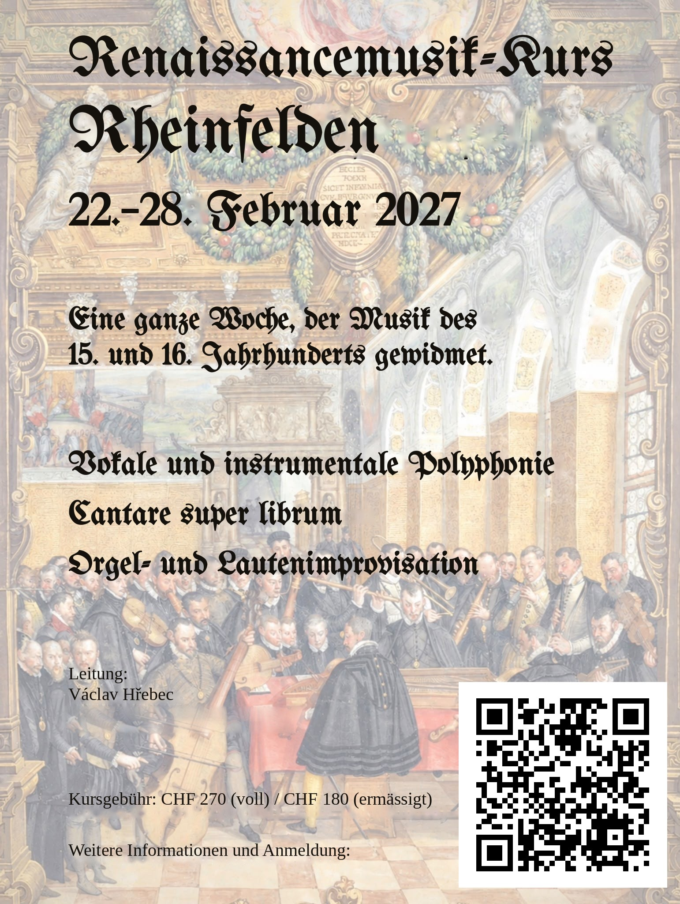

Renaissance Music Course in Rheinfelden
Hello and welcome! My name is Václav Hřebec and I am currently studying at the Schola Cantorum Basiliensis in Basel, Switzerland, specialising in early music theory, improvised counterpoint (a.k.a. cantare super librum…), written mensural polyphony and organ improvisation.
At the end of February we are embarking on a one-week journey through all these musical topics, spanning roughly the years 1400 to 1600. The journey takes place in Rheinfelden (CH), a wonderful small town on the Rhine near Basel.
Register here
At a glance
- Dates
- Monday 22 – Sunday 28 February 2027
- Venue
- Reformed Church, Rheinfelden (CH)
- Topics
- Improvised and written polyphony, mensural notation, solmisation, organ and instrumental improvisation
- Participants
- Max. 12 active participants; passive participants welcome
- Fees
- Active participation: CHF 270 (full price) / CHF 180 (reduced, students)
Passive participation: individual fee - Languages
- English, Deutsch; French and Czech for quick translations
Who is it for?
- The week is open to anyone who can sing Renaissance music securely from modern notation: students of early music as well as amateurs singing in a choir.
- The full first day explains the basic concepts of late medieval musical practice (notation, solmisation, performance practice) for those not yet familiar with them. From Tuesday on, we all dive a bit deeper together.
- Bring your Renaissance instruments of any kind: the more instruments, the more fun!
- Our language will most probably be English. In case everyone speaks German, dann sprechen wir einfach Deutsch. French and Czech also work for me, if someone needs a quick translation.
We are certainly going to take a look at the manuscript called Codex Speciálník.
Plan for the week
Here is a sketch of the plan:
Monday 22 February
| 10:00 | Welcome! |
| 10:15–12:45 | Starter pack I: musical system(s), Guidonian hand(s), hexachordal solmisation |
| 12:45–13:45 | Lunch |
| 13:45–15:00 | Siesta! |
| 15:00–17:30 | Starter pack II: note shapes and durations, mensuration signs |
| 17:30–19:00 | Dinner |
| from 19:00 | Free programme |
Tuesday – Saturday (Thursday possibly different)
| 8:30–10:00 | Breakfast |
| 10:00–11:00 | Improvised polyphony |
| 11:00–11:15 | Break |
| 11:15–12:30 | Written polyphony |
| 12:45–13:45 | Lunch |
| 13:45–15:00 | Siesta! |
| 15:00–17:00 | Instrumental improvisation |
| 17:30–19:00 | Dinner |
| from 19:00 | Free programme (surprise me with your ideas, I am gonna surprise you with mine!) |
Sunday 28 February
| 8:00–9:00 | Breakfast |
| 9:00–9:30 | Short rehearsal in the church |
| 10:00–11:00 | Church service with our music |
| 11:00–12:00 | Talking to people :)) |
| from 12:00 | Lunch and free programme / saying goodbye |
- Thursday trip: we can go on a short excursion. A few ideas: discovering the city, a small hike to the Olsberg monastery, sightseeing in Basel, and much more…
- Depending on the number of organists, I will arrange improvisation lessons and practice times once I have more applications!
To the organists
There are two fantastic organs looking forward to playing Renaissance music:
- Metzler organ (1973) in the Reformed Church
- A 1984 copy of the ca. 1580 table organ from Chur (CH)
Food
It is going to be cold outside, but the church is going to be heated (!) and warm meals will be served three times a day. Very kind people from the church will be cooking for us daily; the food is paid separately. It is the most affordable and most comfortable option for everyone, I believe. We could even get the ingredients in Germany!
- If we take breakfast, lunch and dinner together, I expect the total cost for the whole week to be between CHF 200 and 250.
- Please let me know your food preferences and restrictions!
Places
4310 Rheinfelden
Switzerland
4310 Rheinfelden
Switzerland
Accommodation tip: search for your accommodation in the German part of Rheinfelden. Then you just cross the bridge to the Swiss side and in 4 minutes you are in the church!
Fees
- Active participation: CHF 270 (full price) / CHF 180 (reduced price, students)
- Passive participation: the fee is individual – speak to me!
- The number of active participants is limited to 12.
If anyone has too many gold bars or a rich uncle, tell me: that would lower the price for everyone, or we could cover the food costs with it!
Questions?
Do not hesitate to ask me! Send me an email at vaclavhrebec2000@gmail.com.
Kurs für Renaissancemusik in Rheinfelden
Herzlich willkommen! Ich heisse Václav Hřebec und studiere an der Schola Cantorum Basiliensis in Basel. Meine Schwerpunkte sind Musiktheorie der Alten Musik, improvisierter Kontrapunkt (alias cantare super librum…), geschriebene Mensuralpolyphonie und Orgelimprovisation.
Ende Februar begeben wir uns auf eine einwöchige Reise durch all diese Themen, von etwa 1400 bis 1600. Die Reise findet im wunderschönen Städtchen am Rhein bei Basel statt: in Rheinfelden (CH).
Zur Anmeldung
Auf einen Blick
- Datum
- Montag, 22. – Sonntag, 28. Februar 2027
- Ort
- Reformierte Kirche Rheinfelden (CH)
- Inhalte
- Improvisierte und geschriebene Polyphonie, Mensuralnotation, Solmisation, Orgel- und Instrumentalimprovisation
- Teilnahme
- Max. 12 aktive Teilnehmende; passive Teilnahme willkommen
- Kursgebühr
- Aktive Teilnahme: CHF 270 (voller Preis) / CHF 180 (ermässigt, Studierende)
Passive Teilnahme: individuelle Gebühr - Sprachen
- Englisch, Deutsch; Französisch und Tschechisch für kurze Übersetzungen
Für wen ist der Kurs?
- Die Woche steht allen offen, die Renaissancemusik sicher aus moderner Notation singen können: Studierende der Alten Musik ebenso wie Laien, die in einem Chor singen.
- Am ersten Tag erkläre ich die Grundbegriffe der spätmittelalterlichen Musikpraxis (Notation, Solmisation, Aufführungspraxis) für alle, die damit noch nicht vertraut sind. Ab Dienstag tauchen wir dann gemeinsam etwas tiefer ein.
- Bringen Sie gerne Renaissanceinstrumente jeder Art mit: je mehr Instrumente, desto mehr Spass!
- Kurssprache ist voraussichtlich Englisch. Wenn alle Deutsch sprechen, sprechen wir einfach Deutsch. Französisch und Tschechisch gehen bei mir auch, falls jemand eine kurze Übersetzung braucht.
Ganz sicher schauen wir uns die Handschrift Codex Speciálník an.
Wochenplan
Hier eine Skizze des Ablaufs:
Montag, 22. Februar
| 10:00 | Willkommen! |
| 10:15–12:45 | Starterpaket I: Tonsystem(e), Guidonische Hand, hexachordale Solmisation |
| 12:45–13:45 | Mittagessen |
| 13:45–15:00 | Siesta! |
| 15:00–17:30 | Starterpaket II: Notenformen und -werte, Mensurzeichen |
| 17:30–19:00 | Abendessen |
| ab 19:00 | Freies Programm |
Dienstag – Samstag (Donnerstag evtl. anders)
| 8:30–10:00 | Frühstück |
| 10:00–11:00 | Improvisierte Polyphonie |
| 11:00–11:15 | Pause |
| 11:15–12:30 | Geschriebene Polyphonie |
| 12:45–13:45 | Mittagessen |
| 13:45–15:00 | Siesta! |
| 15:00–17:00 | Instrumentale Improvisation |
| 17:30–19:00 | Abendessen |
| ab 19:00 | Freies Programm (überraschen Sie mich mit Ihren Ideen, ich überrasche Sie mit meinen!) |
Sonntag, 28. Februar
| 8:00–9:00 | Frühstück |
| 9:00–9:30 | Kurze Probe in der Kirche |
| 10:00–11:00 | Gottesdienst mit unserer Musik |
| 11:00–12:00 | Gespräche mit der Gemeinde :)) |
| ab 12:00 | Mittagessen und freies Programm / Abschied |
- Ausflug am Donnerstag: Wir können einen kleinen Ausflug machen. Ein paar Ideen: die Stadt entdecken, eine kleine Wanderung zum Kloster Olsberg, Basel besichtigen und vieles mehr…
- Je nach Anzahl der Organistinnen und Organisten plane ich Improvisationsunterricht und Übezeiten, sobald mehr Anmeldungen da sind!
Für Organistinnen und Organisten
Zwei wunderbare Orgeln freuen sich darauf, Renaissancemusik zu spielen:
- Metzler-Orgel (1973) in der Reformierten Kirche
- Eine Kopie (1984) der Tischorgel aus Chur (CH), um 1580
Verpflegung
Draussen wird es kalt sein, aber die Kirche ist geheizt (!) und es gibt dreimal täglich warme Mahlzeiten. Sehr liebe Menschen aus der Kirchgemeinde kochen täglich für uns; das Essen wird separat bezahlt. Das ist, glaube ich, die günstigste und bequemste Lösung für alle. Die Zutaten könnten wir sogar in Deutschland einkaufen!
- Wenn wir Frühstück, Mittag- und Abendessen gemeinsam einnehmen, rechne ich für die ganze Woche mit insgesamt CHF 200–250.
- Bitte teilen Sie mir Ihre Essensvorlieben und Unverträglichkeiten mit!
Orte
4310 Rheinfelden
Schweiz
4310 Rheinfelden
Schweiz
Tipp zur Unterkunft: Suchen Sie eine Unterkunft im deutschen Rheinfelden. Dann gehen Sie einfach über die Brücke auf die Schweizer Seite und sind in 4 Minuten in der Kirche!
Kursgebühren
- Aktive Teilnahme: CHF 270 (voller Preis) / CHF 180 (ermässigter Preis, Studierende)
- Passive Teilnahme: Die Gebühr ist individuell – sprechen Sie mich an!
- Die Zahl der aktiven Teilnehmenden ist auf 12 begrenzt.
Falls Sie zu viele Goldbarren oder einen reichen Onkel haben, sagen Sie es mir: Dann wird es für alle günstiger, oder wir können damit das Essen bezahlen!
Fragen?
Fragen Sie mich gerne! Schreiben Sie mir eine E-Mail an vaclavhrebec2000@gmail.com.